Introduction to imaging-based spatial transcriptomics analysis (Bruker CosMx NSCLC)
Dharmesh D. Bhuva
Frazer Institute, The University of QueenslandSAiGENCI, The University of Adelaidedharmesh.bhuva@adelaide.edu.au
Chin Wee Tan
Walter and Eliza Hall InstituteThe University of Melbournecwtan@wehi.edu.au
Jul 2025
Source:vignettes/workflow_spatial_cosmx.Rmd
workflow_spatial_cosmx.Rmd
R version: R version 4.5.1 (2025-06-13)
Bioconductor version: 3.21
Package
version: 1.0.0
Introduction
Spatial molecular technologies have revolutionised the study of biological systems. We can now study cellular and sub-cellular structures in complex systems. However, these technologies generate complex datasets that require new computational approaches and ideas to analyse. Many of these pipelines are still being developed therefore what is state-of-the-art now will not remain so for too long. However, the biological aim of analysis will mostly remain the same with more being uncovered as computational methods advance. This workshop intends to demonstrate the types of biological questions that can be studied using spatial transcriptomics datasets. Our intention is NOT to use the state-of-the-art methods, but to show you how data can be analysed to study spatial hypotheses. As users get familiar with these ideologies, they can swap out older tools with newer, more powerful tools. As instructors, we hope to update this workshop as more and better tools become available. We look forward to receiving community contributions as well.
Pre-processing steps already performed
Data from the instrument comes in raw images that are often summerised to transcript tables. These tables are then coupled with immunofluorescence images for a few key proteins or marker such as DAPI which stains the nucleus, Pan-Cytokeratin which stains the membrane of cancer cells, a cocktail of membrane proteins, markers such as CD45 which stain immune cells, and a cocktail of cytoplasmic markers (technology specific). These proteins are used to perform cell segmentation as the measurements are obtained at the transcript level and not the cell level (as is the case with single-cell RNA-seq data). Platforms provide segmented data and users can opt to perform their own segmentation if needed. If you wish you re-segment the data yourself, you could try using methods such as BIDCell (Fu et al. 2024) that use a single cell reference dataset to perform segmentation using the marker proteins as well as transcriptomics measurements. Do note that vendors are constantly improving segmentation and recent improvements are accurate on difficult to segment cells such as neurons and astrocytes.
We will use the already segmented cell-level count data. We will also use a previously prepared SpatialExperiment object. If users want to prepare their own object, all they need is the cell matrix file, the feature table, the cell table and a table of spatial coordinates (if this information is not already in the cell table). With these, information on preparing your own SpatialExperiment object can be found in this package’s vignette. The design for this object is shown in the figure below.

Loading prepared data
The data we will use in this workshop is from the 10x Xenium platform. Since the objective of this workshop is to introduce you to spatial transcriptomics analysis, we do not work with the full dataset, which contains over 500,000 cells and instead opt to work with a smaller subset of the sample. This region contains interesting features and is therefore enough to showcase a complete spatial transcriptomics analysis workflow. The data used in this workshop is a window with the x coordinate in the interval (4800, 5800) and the y coordinate in the interval (8500, 9500). This window is shown in the context of the full tissue below.

library(SpatialExperiment)
data(lung5) # replicate 1
# preview object
lung5## class: SpatialExperiment
## dim: 980 13463
## metadata(0):
## assays(1): counts
## rownames(980): VTN TGFBR2 ... ADGRG2 NegPrb8
## rowData names(2): gene genetype
## colnames(13463): Lung5_Rep3_16_1 Lung5_Rep3_16_10 ... Lung5_Rep3_22_998
## Lung5_Rep3_22_999
## colData names(7): sample_id cell_id ... Level2 fov
## reducedDimNames(0):
## mainExpName: NULL
## altExpNames(0):
## spatialCoords names(2) : x y
## imgData names(1): sample_id
# retrieve column (cell) annotations
colData(lung5)## DataFrame with 13463 rows and 7 columns
## sample_id cell_id region technology
## <character> <character> <character> <character>
## Lung5_Rep3_16_1 Lung5_Rep3 16_1 Tumour CosMx
## Lung5_Rep3_16_10 Lung5_Rep3 16_10 Tumour CosMx
## Lung5_Rep3_16_100 Lung5_Rep3 16_100 Abnormal epithelium CosMx
## Lung5_Rep3_16_1000 Lung5_Rep3 16_1000 Abnormal epithelium CosMx
## Lung5_Rep3_16_1001 Lung5_Rep3 16_1001 Abnormal epithelium CosMx
## ... ... ... ... ...
## Lung5_Rep3_22_995 Lung5_Rep3 22_995 Stroma CosMx
## Lung5_Rep3_22_996 Lung5_Rep3 22_996 Stroma CosMx
## Lung5_Rep3_22_997 Lung5_Rep3 22_997 Stroma CosMx
## Lung5_Rep3_22_998 Lung5_Rep3 22_998 Stroma CosMx
## Lung5_Rep3_22_999 Lung5_Rep3 22_999 Stroma CosMx
## Level1 Level2 fov
## <character> <character> <character>
## Lung5_Rep3_16_1 Tumour area with str.. Epithelium - panCK+ fov16
## Lung5_Rep3_16_10 Tumour area with str.. Stroma fov16
## Lung5_Rep3_16_100 Abnormal but not tum.. Stroma fov16
## Lung5_Rep3_16_1000 Abnormal but not tum.. Stroma fov16
## Lung5_Rep3_16_1001 Abnormal but not tum.. Stroma fov16
## ... ... ... ...
## Lung5_Rep3_22_995 NA Stroma fov22
## Lung5_Rep3_22_996 NA Stroma fov22
## Lung5_Rep3_22_997 NA Stroma fov22
## Lung5_Rep3_22_998 NA Stroma fov22
## Lung5_Rep3_22_999 NA Stroma fov22
# retrieve row (gene/probe) annotations
rowData(lung5)## DataFrame with 980 rows and 2 columns
## gene genetype
## <character> <character>
## VTN VTN Gene
## TGFBR2 TGFBR2 Gene
## JUNB JUNB Gene
## FKBP11 FKBP11 Gene
## REG1A REG1A Gene
## ... ... ...
## TSC22D1 TSC22D1 Gene
## CD40 CD40 Gene
## GDNF GDNF Gene
## ADGRG2 ADGRG2 Gene
## NegPrb8 NegPrb8 NegPrb
# retrieve spatial coordinates
head(spatialCoords(lung5))## x y
## Lung5_Rep3_16_1 -8679.934 12706.31
## Lung5_Rep3_16_10 -8894.582 12709.94
## Lung5_Rep3_16_100 -7189.803 12549.21
## Lung5_Rep3_16_1000 -8028.512 11347.95
## Lung5_Rep3_16_1001 -7470.037 11347.64
## Lung5_Rep3_16_1002 -6631.154 11351.96
# retrieve counts - top 5 cells and genes
counts(lung5)[1:5, 1:5]## 5 x 5 sparse Matrix of class "dgCMatrix"
## Lung5_Rep3_16_1 Lung5_Rep3_16_10 Lung5_Rep3_16_100 Lung5_Rep3_16_1000
## VTN . . 2 .
## TGFBR2 . 1 . .
## JUNB . 1 . 1
## FKBP11 . . . .
## REG1A . . . .
## Lung5_Rep3_16_1001
## VTN .
## TGFBR2 .
## JUNB .
## FKBP11 .
## REG1A .
library(ggplot2)
library(patchwork)
library(SpaNorm)
# set default point size to 0.5 for this report
update_geom_defaults(geom = "point", new = list(size = 0.5))
plotSpatial(lung5, colour = region) +
scale_colour_brewer(palette = "Dark2") +
# improve legend visibility
guides(colour = guide_legend(override.aes = list(shape = 15, size = 5)))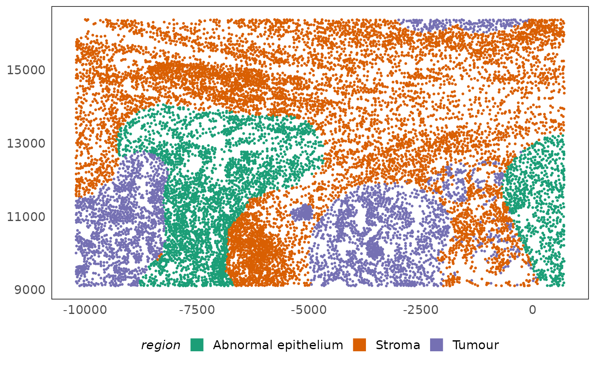
For users interested in analysing the whole dataset, it can be obtained using the code below.
Please note that the full dataset contains over 500,000 cells and will not scale for the purpose of this workshop. If interested, run the code below on your own laptop.
## DO NOT RUN during the workshop as the data are large and could crash your session
if (!require("ExperimentHub", quietly = TRUE)) {
BiocManager::install("ExperimentHub")
}
if (!require("SubcellularSpatialData", quietly = TRUE)) {
BiocManager::install("SubcellularSpatialData")
}
# load the metadata from the ExperimentHub
eh = ExperimentHub()
# download the transcript-level data
tx = eh[["EH8232"]]
# filter the Lung5_Rep1 sample
tx = tx[tx$sample_id == "Lung5_Rep1", ]
# summarise measurements for each cell
lung5 = tx2spe(tx, bin = "cell")Quality control
Most spatial transcriptomics assays include negative control probes to aid in quality control. These probes do not bind to the transcripts of interest (signal), so represent noise in the assay. There are three different types of negative controls in the 10x Xenium assay. As these vary across technologies and serve different purposes, we treat them equally for our analysis and assess them collectively. The breakdown of the different types of negative control probes is given below.
table(rowData(lung5)$genetype)##
## Gene NegPrb
## 960 20We now use compute and visualise quality control metrics for each cell. Some of the key metrics we assess are:
-
sumortotal- Total number of transcripts and negative control probes per cell (more commonly called the library size). -
detected- Number of transcripts and negative control probes detected per cell (count > 0). -
subsets_neg_sum- Count of negative control probes (noise) per cell. -
subsets_neg_detected- Number of negative control probes expressed per cell (count > 0). -
subsets_neg_percent-subsets_neg_sum/sum.
Additionally, the vendor (10x) provides their own summary of quality
through the qv score. This is usually provided per detected
measurements but we compute the average per cell when deriving cellular
summaries. Likewise, we compute the number of transcripts allocated to
the nucleus (overlaps_nucleus).
library(scater)
library(scuttle)
# identify the negative control probes
is_neg = rowData(lung5)$genetype != "Gene"
# compute QC metrics for each cell
lung5 = addPerCellQCMetrics(lung5, subsets = list("neg" = is_neg))Quality control is all about visualisation!
One of the best ways to understand the data and identify problematic cells or regions is to visualise the QC metrics. We need to visualise the metrics in various contexts to better understand what cells appear of poor qaulity. As such, we usually plot metrics against each other, we visualise them in space, and we visualise them in the context of the higher dimensional structure of the data. To aid the latter, we will compute lower dimensional representations using the uniform manifold approximation and projection (UMAP). As the UMAP embedding can be computationally intensive, we usually perform PCA prior to UMAP. This approach to quality control is identical to that used for single-cell RNA-seq analysis.
# compute log counts - to fix the skew with counts
logcounts(lung5) = log2(counts(lung5) + 1)
# compute PCA
lung5 = runPCA(lung5, ncomponents = 30)
# compute UMAP
lung5 = runUMAP(lung5, dimred = "PCA")We plot the sum (library size) against the number of
genes detected, and colouring the points based on the proportion of
negative control probes (subsets_neg_percent). We see that
as more genes are detected, more measurements are obtained (library size
increases). There are cells where the library size is very low and the
number of genes detected is low as well. Considering the smaller panel
size of 960 target genes in this assay, we expect the number of genes
detected in some cell types to be small. However, if we detect very few
genes in a cell, we are less likely to obtain any useful information
from them. As such, poor quality cells can be defined as those with very
low library sizes and number of genes detected.
plotColData(lung5, "detected", "sum", colour_by = "region", scattermore = TRUE) +
scale_colour_brewer(palette = "Dark2") +
guides(colour = guide_legend(override.aes = list(shape = 15, size = 5), title = "Region")) +
geom_hline(yintercept = 50, lty = 2) +
geom_vline(xintercept = 75, lty = 2)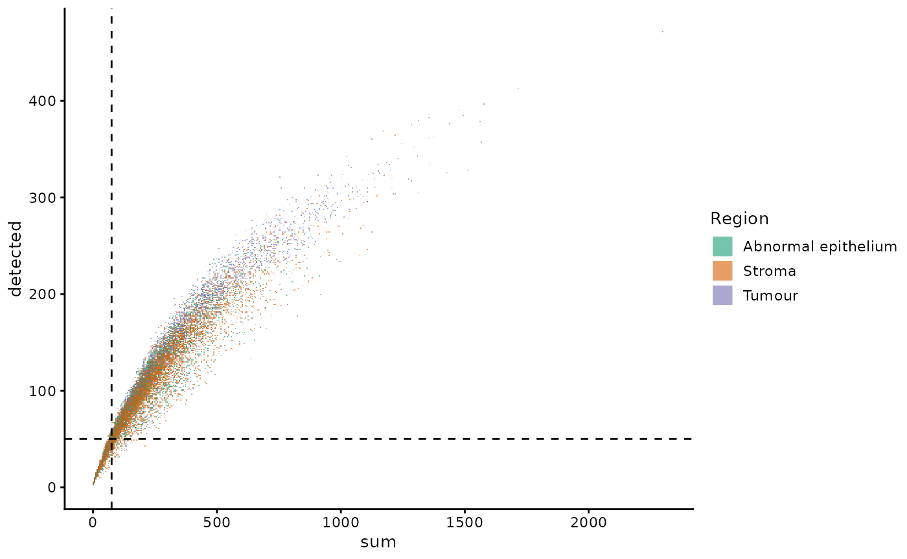
However, we need to identify appropriate thresholds to classify poor quality cells. As the panel sizes and compositions for these emerging technologies are variable, there are no standards as of yet for filtering. For instance, immune cells will always have smaller library sizes and potentially a smaller number of genes expressed in a targetted panel as each cell type may be represented by a few marker genes. Additionally, these cells are smaller in size therefore could be filtered out using an area-based filter. Desipte the lack of standards, the extreme cases where cells express fewer than 20 genes and have fewer than 50 detections are clearly of poor quality. As such, we can start with these thresholds and adjust based on other metrics and visualisations.
library(standR)
# UMAP plot
p1 = plotDR(lung5, dimred = "UMAP", colour = sum, alpha = 0.75, size = 0.5) +
scale_colour_viridis_c(option = "F") +
labs(x = "UMAP1", y = "UMAP2") +
theme(legend.position = "bottom")
# spatial plot
p2 = plotSpatial(lung5, colour = sum, alpha = 0.75) +
scale_colour_viridis_c(option = "F") +
theme(legend.position = "bottom")
p1 + p2 + plot_annotation(title = "Sum (library size)")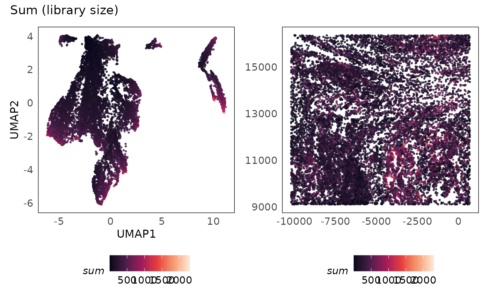
# UMAP plot
p1 = plotDR(lung5, dimred = "UMAP", colour = detected, alpha = 0.75, size = 0.5) +
scale_colour_viridis_c(option = "F") +
labs(x = "UMAP1", y = "UMAP2") +
theme(legend.position = "bottom")
# spatial plot
p2 = plotSpatial(lung5, colour = detected, alpha = 0.75) +
scale_colour_viridis_c(option = "F") +
theme(legend.position = "bottom")
p1 + p2 + plot_annotation(title = "Detected (number of genes expressed)")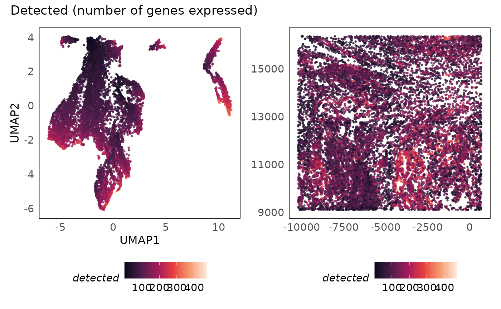
# UMAP plot
p1 = plotDR(lung5, dimred = "UMAP", colour = subsets_neg_percent, alpha = 0.75, size = 0.5) +
scale_colour_viridis_c(option = "F", limits = c(0, 5), oob = scales::squish) +
labs(x = "UMAP1", y = "UMAP2") +
theme(legend.position = "bottom")
# spatial plot
p2 = plotSpatial(lung5, colour = subsets_neg_percent, alpha = 0.75) +
scale_colour_viridis_c(option = "F", limits = c(0, 5), oob = scales::squish) +
theme(legend.position = "bottom")
p1 + p2 + plot_annotation(title = "Proportion of negative control probes")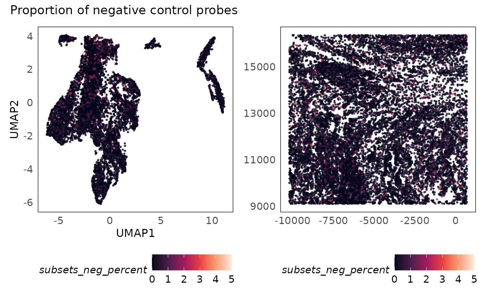
Having visualised the quality metrics and their distrition across space and the genomic dimensions, we can now begin to test threshold values. We want to remove low quality cells but we have to be careful not to introduce bias (e.g., by preferentially removing biological entities such as regions or cells).
Try modifying the thresholds below to see the effect of over- or under- filtering.
- What happens when you set the
sumthreshold to 300? - What about setting the
detectedthreshold to 100?
thresh_sum = 75
thresh_detected = 50
thresh_neg = 5
# classify cells to keep
lung5$keep = lung5$sum > thresh_sum & lung5$detected > thresh_detected & lung5$subsets_neg_percent < thresh_neg
# UMAP plot
p1 = plotDR(lung5, dimred = "UMAP", colour = keep, alpha = 0.75, size = 0.5) +
scale_color_brewer(palette = "Set1") +
labs(x = "UMAP1", y = "UMAP2") +
theme(legend.position = "bottom") +
guides(colour = guide_legend(override.aes = list(shape = 15, size = 5)))
# spatial plot
p2 = plotSpatial(lung5, colour = keep, alpha = 0.75) +
scale_color_brewer(palette = "Set1") +
theme(legend.position = "bottom") +
guides(colour = guide_legend(override.aes = list(shape = 15, size = 5)))
p1 + p2 + plot_annotation(title = "Cells retained after QC filtering")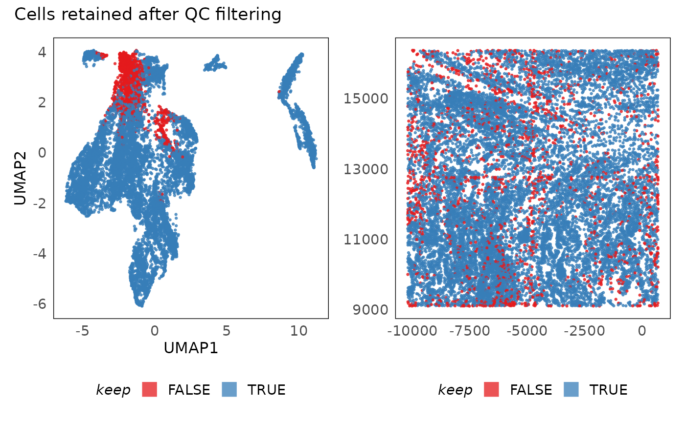
In practice, after poor quality cells are filtered out, we tend to see clearer separation of clusters in the UMAP (or equivalent visualisations). We also notice that poor quality cells often seem like intermmediate states between clusters in these plots. Additionally, they tend to be randomly distributed in space. If they are concentrated in some sub-regions (as above - along the field of view boundaries), it is usually due to technical reasons. In the above plot, we poor quality primarily occurs along the field of view boundaries. It is unlikely that biology would be present in such a regular shape therefore we can use that region as a guide in selecting thresholds. Having selected the thresholds, we now apply them and remove the negative control probes from donwstream analysis. This phenomenon of lower library size and lower number of genes detected has been observed in the past and is due to cells being cut off from the field of view.
# apply the filtering
lung5 = lung5[, lung5$keep]
# remove negative probes
lung5 = lung5[!is_neg, ]Newer quality control tools are being developed and are currently under peer-review. These include SpotSweeper (Totty, Hicks, and Guo 2024) and SpaceTrooper. As these software are not deposited to more permanent repositories, we do not use them in this workshop. We advise advanced users to use these tools for their QC as they help come up with additional QC summaries for each cell or region in space. SpaceTrooper for instance, computes a flag score that penalises cells that are too large or small, and whose aspect ratio is large. While these filters may make sense in most systems, they could penalise stomal or neuronal cells that are elongated and whose aspect ratio will be very large. Therefore always remember that QC is relative the biological system being studied.
As these technologies are still emerging, all quality control metrics should be evaluated on a case-by-case basis depending on the platform, panel set, and tissue. Knowing the biology to expect or what is definitely NOT biology helps in making these decisions. As any experienced bioinformatician will tell you, you will vary these thresholds a few times throughout your analysis because you learn more about the data, biology, and platform as you analyse the data. This cyclical approach can introduce biases so always rely on multiple avenues of evidence before changing parameters.
Normalisation
Above we plot the sum, which is commonly known as the
library size, for the purpose of quality control. Assessing the library
size is helpful in identifying poor quality cells. Beyond QC, variation
in library size can affect donwstream analysis as it represents
measurement bias. A gene may appear to be highly expressed in some cells
simply because more measurements were sampled from the cell, and not
because the gene is truly highly expressed. Whether it is
sequencing-based or imaging-based transcriptomics, we are always
sampling from the true pool of transcripts and are therefore likely to
have library size variation.
While library sizes are a good measure of technical variation in conventional sequencing data (bulk and single-cell RNA-seq), they are not the most appropriate in assessing technical effects in targeted panels because the panel is biased towards measuring the biology of interest. As such, we need a purely technical measurement to adjust our data. Negative control probes offer this measure of technical biases in the data as they are designed to not measure any biology (i.e., the are synthetic probes designed to not hybridise with any transcripts in the system).
Though it is ideal to use negative control probes for normalisation of targeted spatial transcriptomics data, the data we are analysing is relatively old and from a prototype instrument, therefore, the negative control probe counts are too low to be used for modelling. Additionally, the current Bruker CosMx instrument uses two kinds of negative control probes, conventional negative control probes (such as in this dataset) and false codes. The latter are best used for modelling technical variation in CosMx datasets as their counts are generally higher. We recommend using false code counts for normalising Bruker CosMx datasets.
lung5$logLS = log1p(lung5$sum) - mean(log1p(lung5$sum))
plotSpatial(lung5, colour = logLS) +
scale_colour_distiller(palette = "PRGn", limits = c(-0.5, 0.5), oob = scales::squish) +
theme(legend.position = "bottom")
To remove these technical biases, we perform normalisation. As measurements are independent in bulk and single-cell RNA-seq (reactions happen independently for each sample/cell), each cell or sample can be normalised independently by computing sample/cell-specific adjustment factors. Measurements are locally dependent in spatial transcriptomics datasets therefore technical effects (including conventional library size effects) confound biology (Bhuva et al. 2024). The plot above show this clearly as the technical effect demarcate tissue structures. These can be due to various causes such as:
- The tissue structure in one region is more rigid, thereby making it difficult for reagents to permeate.
- Reagents distributed unevenly due to technical issues leading to a sub-region within a tissue region being under sampled.
In both cases, each cell cannot be normalised independently as nearby cells are likely to experience similar technical effects. To tackle this, our team has developed the SpaNorm normalisation method that uses spatial dependence to decouple technical and biological effects (Salim et al. 2024). SpaNorm uses a spatially constrained regularised generalised linear model to model library size effects and subsequently adjust the data.

The key parameters for SpaNorm normalisation that need to be adjusted are:
-
sample.p- This is the proportion of the data that is sub-sampled to fit the regularised GLM. As spatial transcriptomics datasets are very large, the model can be approximated using by sampling. In practice, we see that ~50,000 cells in a dataset with 500,000 cells works well enough under the assumption that all possible cellular states are sampled evenly across the tissue. This is likely to be true in most cases. Below we use 25% of the cells (which is the default as well) to fit the model (you can tweak this to 1 to use all cells). -
df.tps- Spatial dependence is modelled using thin plate spline functions. This parameter controls the degrees of freedom (complexity) of the function. Complex functions will fit the data better but could overfit therefore in practice, we see that 6-10 degrees of freedom are generally good enough. If the degrees of freedom are increased, regularisation should also be increased (lambda.aparameter). We also allow separate specification of the degrees of freedom for the spline functions for biological and technical effects. Below we specify 8 d.f. for biology and 3 d.f. for technical effects. This works on the assumption that biology will vary more sharply across space than technical effects, which we expect to be relatively smooth.
set.seed(1000)
# perform SpaNorm normalisation
lung5 = SpaNorm(lung5, df.tps = c(8, 3), sample.p = 0.25, batch = lung5$fov)Above, the model is fit and the default adjustment,
logPAC, is computed. Alternative adjustments such as the
mean biology (meanbio), pearson residuals similar to
sctransform used in Seurat (pearson), and median biology
(median) can be computed as well (this will be faster as
the fit does not need to be repeated, however, the same parameters need
to be passed to the function).
# compute mean biology
lung5_pearson = SpaNorm(lung5, df.tps = c(8, 3), batch = lung5$fov, adj.method = "pearson")
p1 = plotSpatial(lung5, what = "expression", assay = "logcounts", colour = EPCAM, alpha = 0.75) +
scale_colour_viridis_c(option = "F") +
ggtitle("Normalised expression") +
theme(legend.position = "bottom")
p2 = plotSpatial(lung5_pearson, what = "expression", assay = "logcounts", colour = EPCAM, alpha = 0.75) +
scale_colour_viridis_c(option = "F", limits = c(NA, 3), oob = scales::squish) +
ggtitle("Mean from SpaNorm model") +
theme(legend.position = "bottom")
p1 + p2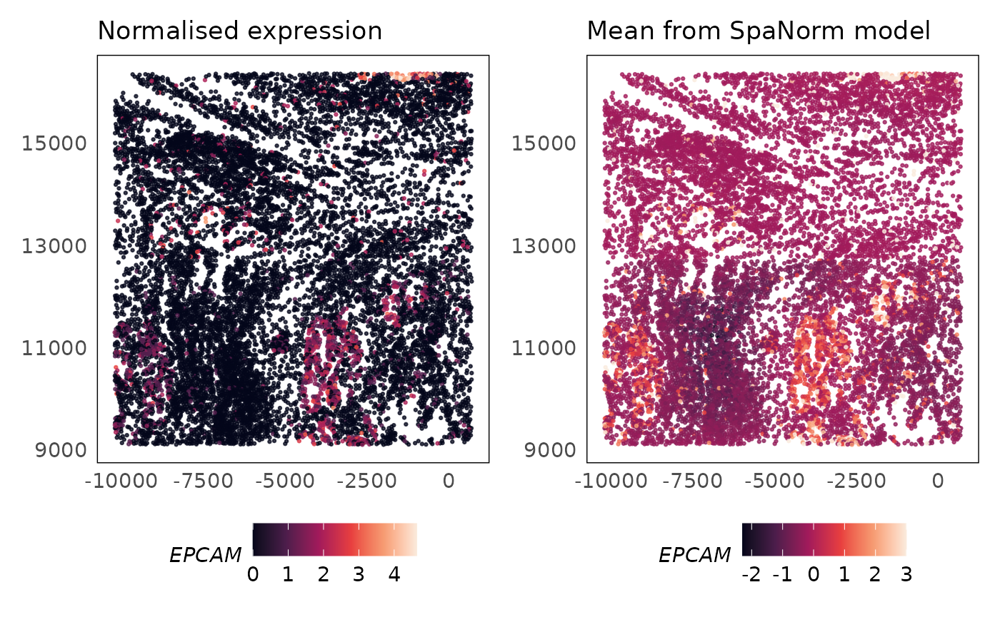
Since the SpaNorm model learns the functions for biological and
technical effects for each gene, we can also investigate these to ensure
that the correct biology is learnt and modelled. The
plotCovariate functions can be used to study these. It is
worth remembering that while the biological function is independent of
covariates (like an intercept), the technical function is a function of
the library size. To enable some interpretation, we show how the
function evaluates at the mean library size below.
p1 = plotCovariate(lung5, covariate = "biology", colour = EPCAM, alpha = 0.75) +
scale_colour_viridis_c(option = "F") +
ggtitle("Biological variation") +
theme(legend.position = "bottom")
p2 = plotCovariate(lung5, covariate = "ls", colour = EPCAM, alpha = 0.75) +
scale_colour_viridis_c(option = "G") +
ggtitle("Technical variation") +
theme(legend.position = "bottom")
p3 = plotCovariate(lung5, covariate = "batch", colour = EPCAM, alpha = 0.75) +
scale_colour_viridis_c(option = "A") +
ggtitle("Batch variation") +
theme(legend.position = "bottom")
p1 + p2 + p3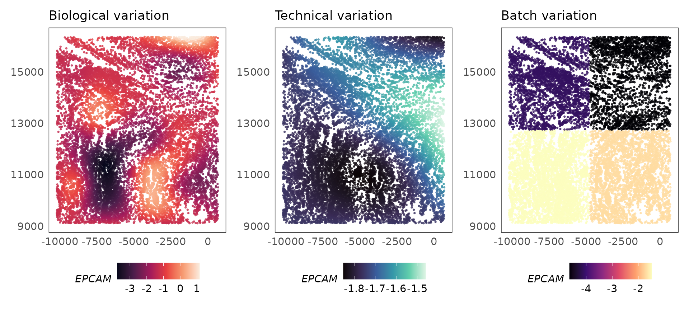
EPCAM is an epithelial cell marker gene that will also be expressed in lung cancer cells that are of epithelial origin. The SpaNorm model correctly models the regions where the cancer cells exist (mean) and is able to normalise technical effects without affecting the biology. The technical function looks similar to the function for biology and this is expected as technical effects due to library size biases confound biology, however, SpaNorm is able to perform the adjustment while preserving most of the biology.
Library size normalisation is important to ensure technical variation is removed from gene expression. In the most extreme cases, a gene that is highly expressed in a region of interest may seem to be lowly expressed because of a drop in library sizes in said region (see manuscript). We have seen that negative probes across most technologies are also capturing library size effects very well and are experimenting with using these to model technical variation and normalise data. In some technologies/datasets, these are very lowly expressed, not because of better data quality but by design as well, and therefore would NOT faithfully represent technical variation. As with every other step, this is still an active area of research.
Identifying spatially variable genes (SVGs)
set.seed(1000)
lung5 = SpaNormSVG(lung5)
topsvgs = topSVGs(lung5, n = 9, fdr = 0.05)
lapply(rownames(topsvgs), function(gene) {
plotSpatial(
lung5,
what = "expression",
assay = "logcounts",
colour = !!sym(gene),
size = 0.2
) +
scale_colour_viridis_c(option = "F")
}) |>
wrap_plots(ncol = 3)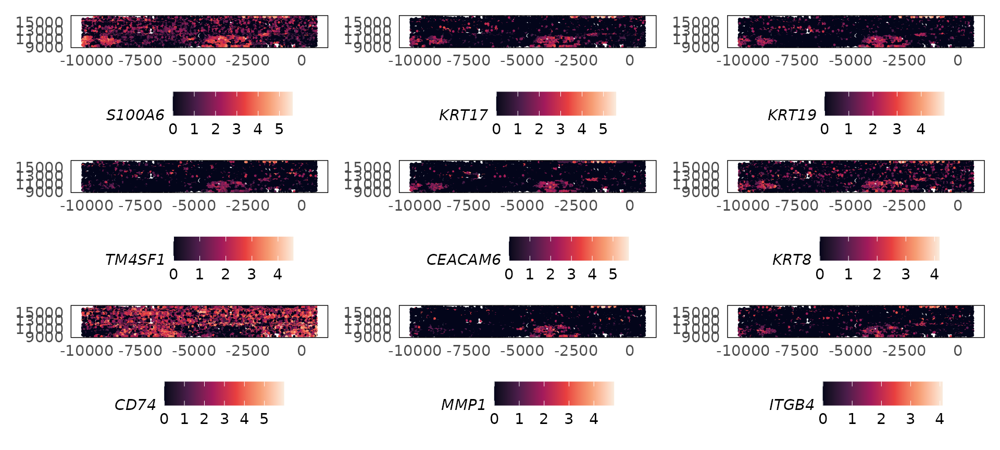
GLM-PCA
lung5 = SpaNormPCA(lung5, svg.fdr = 0.1, ncomponents = 20, residuals = "pearson")
lung5 = runUMAP(lung5, min_dist = 0.3)
# UMAP plot
p1 = plotDR(lung5, dimred = "UMAP", colour = region, alpha = 0.75, size = 0.5) +
scale_color_brewer(palette = "Dark2") +
guides(colour = guide_legend(override.aes = list(shape = 15, size = 5))) +
labs(x = "UMAP1", y = "UMAP2") +
theme(legend.position = "bottom")
p2 = plotDR(lung5, dimred = "UMAP", colour = fov, alpha = 0.75, size = 0.5) +
scale_color_brewer(palette = "Set2") +
guides(colour = guide_legend(override.aes = list(shape = 15, size = 5))) +
labs(x = "UMAP1", y = "UMAP2") +
theme(legend.position = "bottom")
p1 + p2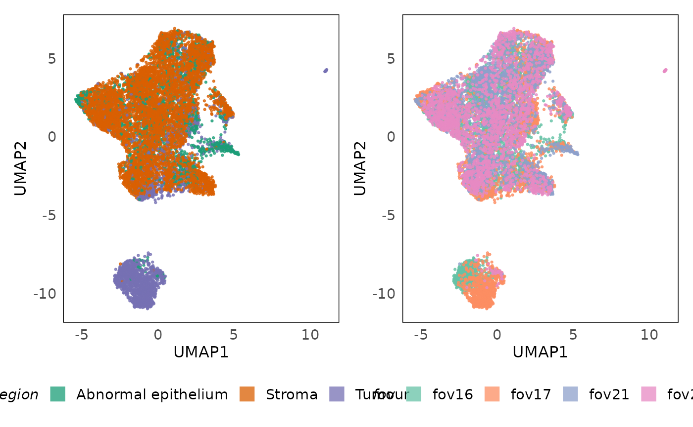
Cell typing
Cell typing can be performed using various approaches. Most of these were developed for the analysis of single-cell RNA-seq datasets and port across well to spatial transcriptomics datasets. The two common strategies are reference-based and reference-free annotations. In the former, annotations are mapped across from a previously annotated dataset. For a thorough discussion on this topic, review the Orchestrating Single-Cell Analysis (OSCA) with Bioconductor book (Amezquita et al. 2020). Here, we use the SingleR package (Aran et al. 2019) along with a reference non-small cell lung cancer (NSCLC) dataset (salcher2022high?).
SingleR is a simple yet powerful algorithm that only requires a
single prototype of what the cell type’s expression profile should look
like. As such, counts are aggregated (pseudobulked) across cells to form
a reference dataset where a single expression vector is created for each
cell type. Aggregation is performed using the
scater::aggregateAcrossCells function. As the original
dataset contains >96,000 cells, we only provide the aggregated counts
for this workshop. Aggregated counts tend to be more robust to technical
variation and are therefore more suitable for cell typing.
library(scran)
# load reference dataset - Salcher et al., Cancer Cell, 2022
data(ref_luca)
# normalise the reference dataset
cl = quickCluster(ref_luca)
ref_luca = computeSumFactors(ref_luca, cluster = cl)
ref_luca = logNormCounts(ref_luca)
# cell types in the reference dataset
levels(ref_luca$cell_type)## [1] "Alveolar cell type 1" "Alveolar cell type 2"
## [3] "B cell" "B cell dividing"
## [5] "Ciliated" "Club"
## [7] "DC mature" "Endothelial cell arterial"
## [9] "Endothelial cell capillary" "Endothelial cell lymphatic"
## [11] "Endothelial cell venous" "Fibroblast adventitial"
## [13] "Fibroblast alveolar" "Fibroblast peribronchial"
## [15] "Macrophage" "Macrophage alveolar"
## [17] "Mast cell" "Mesothelial"
## [19] "Monocyte classical" "Monocyte non-classical"
## [21] "NK cell" "Neutrophils"
## [23] "Pericyte" "Plasma cell"
## [25] "Plasma cell dividing" "ROS1+ healthy epithelial"
## [27] "Smooth muscle cell" "T cell CD4"
## [29] "T cell CD8" "T cell dividing"
## [31] "T cell regulatory" "Tumor cells"
## [33] "cDC1" "cDC2"
## [35] "myeloid dividing" "pDC"
## [37] "stromal dividing" "transitional club/AT2"
library(SingleR)
# predict cell types using SingleR
prediction = SingleR(test = lung5, ref = ref_luca, labels = ref_luca$cell_type)
# add prediction to the SpatialExperiment object
lung5$cell_type = prediction$labels
plotSpatial(lung5, colour = cell_type, alpha = 0.75) +
ggtitle("Predicted cell type") +
theme(legend.position = "bottom") +
guides(colour = guide_legend(override.aes = list(shape = 15, size = 5)))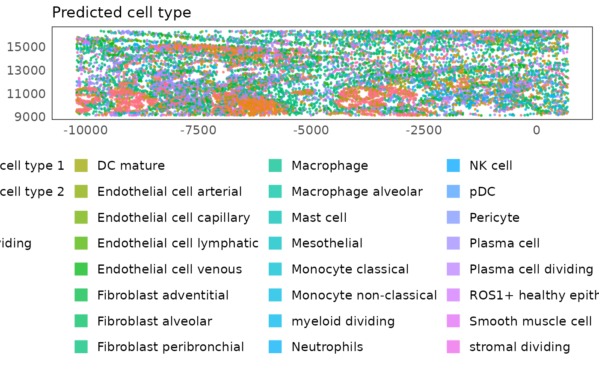
Spatial domain identification
Regions were annotated by an expert pathologist in our dataset. However, this is not always feasible, either due to access to a pathologist, or because the features are not visible in histology images alone. In such instances, a computational approach is required to identify spatial domains or cellular niches. These domains are generally, but not always, defined based on the homogeneity of biology. As this is still a developing area, there are many algorithms available, however, they generally fall within two broad categories of methods:
- Cell type-based - These methods use the cell type information to identify regions where the cell type composition is homogeneous.
- Expression-based - These methods use the full expression profile of cells to identify regions of the tissue with homogeneous gene expression profiles.
Approach 1 - Cell type-based domain identification
These methods use the cell types annotated in the previous type to
determine the homogeneity of cell types within a local region of space
around each cell. The hoodscanR
method is one such method that computes the probability of each cell
type being in a local neighbourhood of each cell in the dataset (Liu et al. 2024). The neighbourhood of each
cell is determined based on the k parameter which specifies
how many of the nearest neighbouring cells should be used to estimate
the cell type probabilities.
library(hoodscanR)
# find neighbouring cells using an approximate nearest neighbour search
set.seed(1000)
nb_cells = findNearCells(lung5, k = 100, anno_col = "cell_type")
nb_cells$cells[1:5, 1:5]## nearest_cell_1 nearest_cell_2
## Lung5_Rep3_16_1 Fibroblast peribronchial Fibroblast peribronchial
## Lung5_Rep3_16_10 Fibroblast peribronchial Endothelial cell venous
## Lung5_Rep3_16_100 Endothelial cell venous Fibroblast alveolar
## Lung5_Rep3_16_1000 T cell regulatory Fibroblast peribronchial
## Lung5_Rep3_16_1001 B cell Macrophage
## nearest_cell_3 nearest_cell_4
## Lung5_Rep3_16_1 Fibroblast alveolar Fibroblast alveolar
## Lung5_Rep3_16_10 Fibroblast alveolar Fibroblast alveolar
## Lung5_Rep3_16_100 Monocyte non-classical T cell regulatory
## Lung5_Rep3_16_1000 Fibroblast peribronchial Plasma cell
## Lung5_Rep3_16_1001 T cell regulatory myeloid dividing
## nearest_cell_5
## Lung5_Rep3_16_1 Fibroblast peribronchial
## Lung5_Rep3_16_10 Fibroblast alveolar
## Lung5_Rep3_16_100 Mast cell
## Lung5_Rep3_16_1000 Plasma cell
## Lung5_Rep3_16_1001 Endothelial cell venous
nb_cells$distance[1:5, 1:5]## nearest_cell_1 nearest_cell_2 nearest_cell_3 nearest_cell_4
## Lung5_Rep3_16_1 59.66036 71.23732 93.28319 105.50952
## Lung5_Rep3_16_10 79.42413 80.90802 87.58466 103.09469
## Lung5_Rep3_16_100 42.83032 47.33316 66.48095 76.16124
## Lung5_Rep3_16_1000 58.31700 66.59987 66.92916 69.88571
## Lung5_Rep3_16_1001 65.97415 69.78375 85.52106 89.67675
## nearest_cell_5
## Lung5_Rep3_16_1 116.67380
## Lung5_Rep3_16_10 110.36708
## Lung5_Rep3_16_100 82.58831
## Lung5_Rep3_16_1000 100.66268
## Lung5_Rep3_16_1001 103.71212
# estimate proportion of each cell type in the neighbourhood of each cell
probmat = scanHoods(nb_cells$distance)
dim(probmat)## [1] 11721 100
# compute probability of each each cell type in the neighbour hood of each cell
neighbourhoods = mergeByGroup(probmat, nb_cells$cells)
neighbourhoods[1:5, 1:5]## Alveolar cell type 1 Alveolar cell type 2 B cell
## Lung5_Rep3_16_1 1.360625e-02 1.142060e-02 0.000000000
## Lung5_Rep3_16_10 1.522646e-03 3.848242e-02 0.000000000
## Lung5_Rep3_16_100 4.929518e-09 8.189433e-05 0.003586059
## Lung5_Rep3_16_1000 0.000000e+00 0.000000e+00 0.009200223
## Lung5_Rep3_16_1001 0.000000e+00 1.066744e-03 0.110972648
## B cell dividing cDC1
## Lung5_Rep3_16_1 0.000000000 0.0283521102
## Lung5_Rep3_16_10 0.000000000 0.0021066222
## Lung5_Rep3_16_100 0.002428671 0.0002870623
## Lung5_Rep3_16_1000 0.001067195 0.0001393729
## Lung5_Rep3_16_1001 0.015444471 0.0349382750
# add neighbourhood information to the SpatialExperiment object
lung5 = mergeHoodSpe(lung5, neighbourhoods)Once these probabilies are assigned around each cell, a secondary clustering can be performed using any desired method. The package currently only supports k-means clustering on the neighbourhood matrix but advanced users can cluster the matrix directly using their preferred method.
# identify spatial domains based on neighbourhood composition (5 clusters)
set.seed(1000)
lung5 = clustByHood(lung5, pm_cols = colnames(neighbourhoods), k = 5, val_name = "hoodscanr_region")
# plot predictions
p1 = plotSpatial(lung5, colour = hoodscanr_region, alpha = 0.75) +
scale_colour_brewer(palette = "Paired", na.value = "#333333", name = "predicted") +
ggtitle("Predicted pathology") +
theme(legend.position = "bottom") +
guides(colour = guide_legend(nrow = 3, override.aes = list(shape = 15, size = 5)))
p2 = plotSpatial(lung5, colour = region) +
scale_colour_brewer(palette = "Dark2") +
ggtitle("Pathology annotations") +
guides(colour = guide_legend(nrow = 3, override.aes = list(shape = 15, size = 5)))
p1 + p2 + plot_annotation(title = "Spatial domain identification")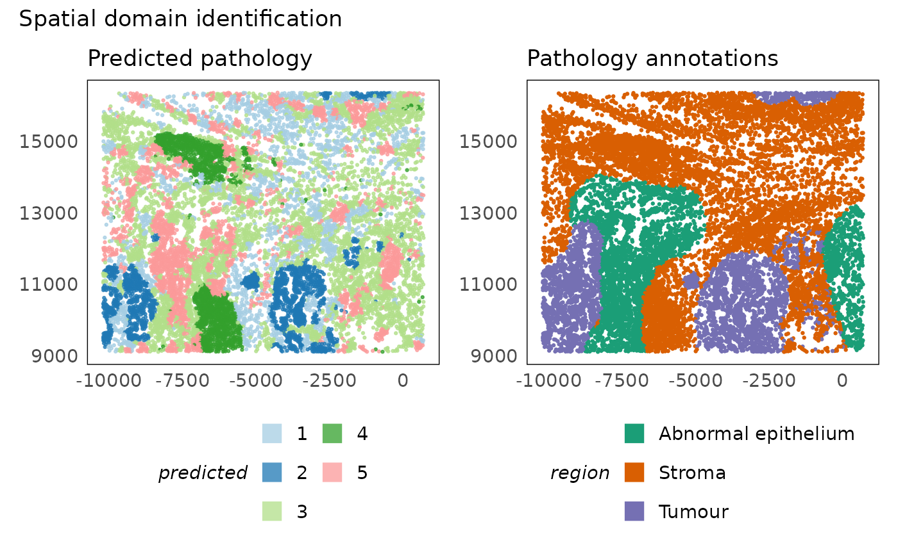
The plot above shows that hoodscanR is able to differentiate the key regions and is clearly able to separate the distinct DCIS lesions. It is also able to identify the layer of cells separating the tumour lesions from the stroma. However, it is unable to distinguish between the invasive and DCIS regions. This is because our current annotation of cell types does not discriminate between the different cellular states of cells in these regions. This is one limitation of cell type based methods - that is, they need the labels of all possible cell types and cell states we are interested. However, the power of these methods is that we can study the neighbourhood composition directly as this was used to generate the domains.
plotProbDist(lung5, pm_cols = colnames(neighbourhoods), by_cluster = TRUE, plot_all = TRUE, show_clusters = as.character(seq(5)), val_name = "hoodscanr_region")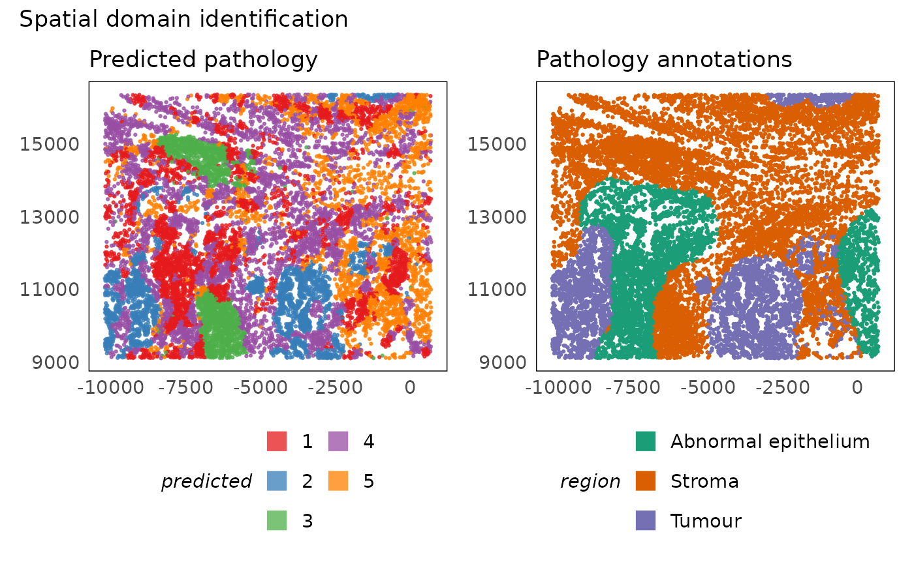
we see that cluster 5 is entirely defined by the presence of malignant cells while cluster 2 captures the tumour lining epithelial cells, malignant cells, and fibroblasts. Cluster 1 is composed of the immune cells, particularly T cells, B cells and macrophages, indicating the formation of lymphoid aggregates. Lymphoid aggregates are interesting structures in the context of solid cancers, and depending on their expression profile, these can be beneficial for patients.
# calculate metrics of heterogeneity - entropy
lung5 = calcMetrics(lung5, pm_cols = colnames(neighbourhoods))
# plot metric
p1 = plotSpatial(lung5, colour = cell_type, alpha = 0.75) +
scale_colour_brewer(palette = "Paired", na.value = "#333333") +
ggtitle("Predicted cell type") +
theme(legend.position = "bottom") +
guides(colour = guide_legend(override.aes = list(shape = 15, size = 5)))
p2 = plotSpatial(lung5, colour = entropy, alpha = 0.75) +
scale_colour_viridis_c(option = "G") +
ggtitle("Cell type heterogeneity") +
theme(legend.position = "bottom")
p1 + p2 + plot_annotation(title = "Cell type heterogeneity")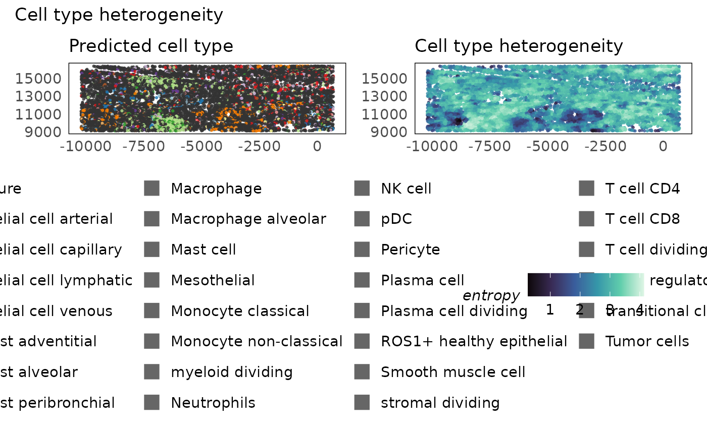
Looking at the heterogeneity of cell types across space, we see that cell composition is very homogeneous within the tumour regions while it is highest in the lymphoid aggregates which are often characterised by the presence of various different types of immune cells. We emphasise again that the homogeneity of the tumour regions is determined based on their cell type call alone and not on their expression profile. As such, the tumours themselves could be heterogeneous if finer cell typing or cell phenotyping were to be performed. Additionally, any errors made in cell typing will propage to domain identification.
The approach that follows allows an unbiased identification of domains using the gene expression data directly.
Approach 2 - Expression-based domain identification
Expression-based methods can be further sub-categorised into three categories:
- Graph Neural Network (GNN) or Graph Convolutional Network (GCN) based algorithms.
- Probabilistic models based on markov random fields.
- Neighbourhood diffusion followed by graph-based clustering.
We note that this is not a comprehensive survey of the literature but just a summary of the most popular methods in this space. The first two approaches can be very powerful, however, are time consuming and will not always scale with larger datasets. Diffusion followed by graph-clustering is a relatively simple, yet powerful approach that scales to large datasets. Banksy is one such algorithm that first shares information within a local neighbourhood, and then performs a standard single-cell RNA-seq inspired graph-based clustering to identify spatial domains (Singhal et al. 2024).
The following key parameters determine the final clustering results:
-
lambda- This controls the degree of information sharing in the neighbourhood (range of [0, 1]) where larger values result in higher diffusion and thereby smoother clusters. -
resolution- The resolution parameter for the graph-based clustering using either the Louvain or Leiden algorithms. Likewise, there are other parameters to control the graph-based clustering. The OSCA book discusses choices for these parameters in depth. -
npcs- The number of principal components to use to condense the feature space. The OSCA book discusses choices for this in depth. -
k_geom- The number of nearest neighbours used to share information. The authors recommend values within [15, 30] and note that variation is minimal within this range.
library(Banksy)
# parameters
lambda = 0.2
npcs = 30
k_geom = 50
res = 0.4
# compute the features required by Banksy
lung5 = computeBanksy(lung5, assay_name = "logcounts", k_geom = k_geom)
# compute PCA on the features
set.seed(1000)
lung5 = runBanksyPCA(lung5, lambda = lambda, npcs = npcs)
# perform graph-based clusering
set.seed(1000)
lung5 = clusterBanksy(lung5, lambda = lambda, npcs = npcs, resolution = res)
# store to the column banksy_region
lung5$banksy_region = lung5$`clust_M0_lam0.2_k50_res0.4`
plotSpatial(lung5, colour = banksy_region, alpha = 0.75) +
scale_colour_brewer(palette = "Paired", na.value = "#333333", name = "predicted") +
ggtitle("Mean from SpaNorm model") +
theme(legend.position = "bottom") +
guides(colour = guide_legend(override.aes = list(shape = 15, size = 5)))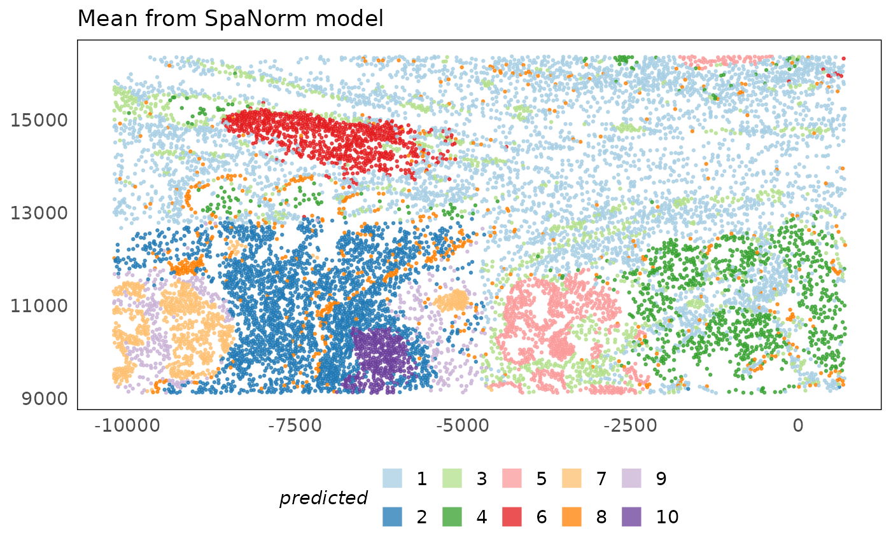
Try varying the parameters to see how the clustering changes. Do note
that the results are automatically stored in a new column in the
colData. Unfortunately, the function does not allow specification of the
new column name so the only approach is to look at the column names
using colnames(colData(idc)) and find the name of the new
column (usually the last one) containing the clustering results. We then
store these to a column of our choosing to make it easier to reference
it.
Looking back at the original annotations, we see that clusters 3 and 5 represent the DCIS and Invasive tumours respectively. Similarly, cluster 10 represents the blood vessel annotated by the pathologist. Computational analysis reveals additional structures present in the tissue that may differ only in the genomic measurements. Clustes 6 and 7 for instance seems to represent different structures in the stroma, some of which may be visible in the histology image but are intestive to label manually. We also find cluster 4 which represents a boundary of cells surrounding invasive and DCIS lesions.
p1 = plotSpatial(lung5, colour = banksy_region, alpha = 0.75) +
scale_colour_brewer(palette = "Paired", na.value = "#333333", name = "predicted") +
ggtitle("Predicted pathology") +
theme(legend.position = "bottom") +
guides(colour = guide_legend(nrow = 3, override.aes = list(shape = 15, size = 5)))
p2 = plotSpatial(lung5, colour = region) +
scale_colour_brewer(palette = "Dark2") +
ggtitle("Pathology annotations") +
guides(colour = guide_legend(nrow = 3, override.aes = list(shape = 15, size = 5)))
p1 + p2 + plot_annotation(title = "Spatial domain identification")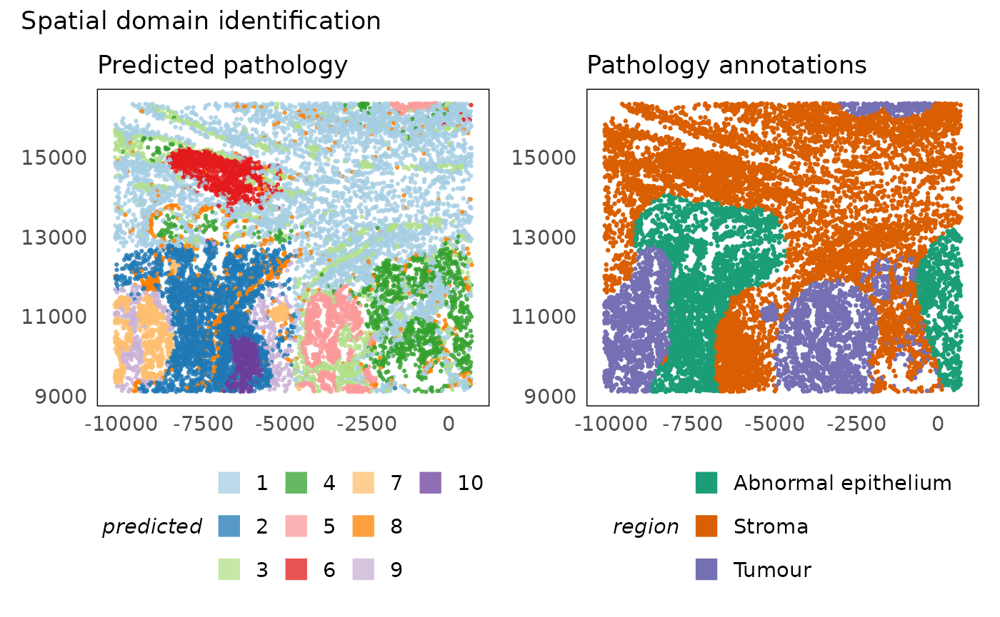
The choice of the better approach amongst the two demonstrated here should be based on the question of interest. They both have their strengths and limitations. BANKSY allows us to identify within tumour differences because it assesses the expression profile directly, however, it does not offer any additional interpretation of the domains it identifies and is therefore normally coupled with differential expression and differential compositional analysis. Errors in the domain identification would propagate to these downstream tasks as well. On the other hand, hoodscanR inherently provides interpretation of the domains it identifies, but it is limited by the accuracy and resolution of cell type annotation.
Differential expression
Cell type identification or clustering allows us to identify the different cellular states in a biological system. The power of spatial molecular datasets is that we can study how cellular states change in response to different structures in the tissue. For instance, in our tissue we see that there are two different types of cancer lesions, ductal carcinoma in situ and invasive. Cancer cells in the latter lesion tend to me aggresive and can spread more than those in the DCIS region. We would be interested in knowning the biological processes that make this happen.
Additionally, cancer cells interact with their environment including cell types such as fibroblasts. We may be interested in identifying the differences in fibroblasts that are in close proximity to cancer cells as opposed to the distant ones. We can identify the genes that are associated with these changes below.
# create clusters to study how cell types vary across domains
clusters = paste(lung5$cell_type, lung5$hoodscanr_region, sep = "_")
clusters |>
table() |>
sort() |>
tail(10)## clusters
## Fibroblast peribronchial_5 Club_2
## 254 345
## Endothelial cell venous_3 Plasma cell_3
## 382 383
## Macrophage_3 Fibroblast peribronchial_3
## 405 427
## B cell_4 Fibroblast peribronchial_1
## 576 584
## Plasma cell_5 Tumor cells_2
## 756 772We see that the two largest clusters capture malignant cells in spatial domains 2 and 5 which align with the invasive and DCIS regions respectively based on the pathology annotations. We also see that though most of the fibroblasts are dispersed in the stroma (region 6), those that are closer to the cancer lesions are clustered in region 3. We would be interested in studying the difference between these and understanding whether they contain features that promote the tumour.
The analysis below is only meant to be a demonstration of the potential of spatial transcriptomics data. A proper statistical analysis would require replicate tissue samples from across different patients. In such a case, we would aggregate transcript counts across cell types using the
scater::sumCountsAcrossCellsto create pseudo-bulk samples, and follow up with a differential expression analysis using theedgeRorlimmapipelines. Alternatively, a more advanced tool such asnicheDEcould be used to perform analysis on a single tissue, however, it would also be more robust with biological replicates. This tool is outside the scope of this introductory workshop therefore is not covered.
# identify markers
marker.info = scoreMarkers(lung5, clusters, pairings = list(c("B cell_4", "T cell regulatory_4"), c("B cell_3", "T cell regulatory_3")))
marker.info## List of length 2
## names(2): B cell_4 T cell regulatory_4Below we compare the malignant (cancer) cells from region 2 (invasive) against those from region 5 (DCIS). Investigating and visialising the top genes shows that DHRS and MUC6 are up-regulated in invasive cancer cells while GATA3 and FLNB are moderately up-regulated in DCIS cancer cells.
# study markers of B cell_4
chosen_bcell = marker.info[["B cell_4"]]
ordered_bcell = chosen_bcell[order(chosen_bcell$rank.AUC), ]
head(ordered_bcell[, 1:4])## DataFrame with 6 rows and 4 columns
## self.average other.average self.detected other.detected
## <numeric> <numeric> <numeric> <numeric>
## MALAT1 4.803664 4.459637 1.000000 0.994512
## CD74 3.153887 2.312227 0.973958 0.848988
## RPL34 1.797616 1.365601 0.814236 0.668511
## MS4A1 1.416434 0.560667 0.631944 0.260054
## IGHM 1.501242 0.702592 0.649306 0.298785
## CD79A 0.777071 0.322778 0.477431 0.210886
plotExpression(lung5,
features = head(rownames(ordered_bcell), 9),
x = "hoodscanr_region",
colour_by = "hoodscanr_region",
ncol = 3
) +
geom_vline(xintercept = c(3, 4), lwd = 0.1, lty = 2) +
scale_colour_brewer(palette = "Paired", na.value = "#333333", name = "cluster") +
theme(legend.position = "bottom") +
guides(colour = guide_legend(override.aes = list(shape = 15, size = 5)))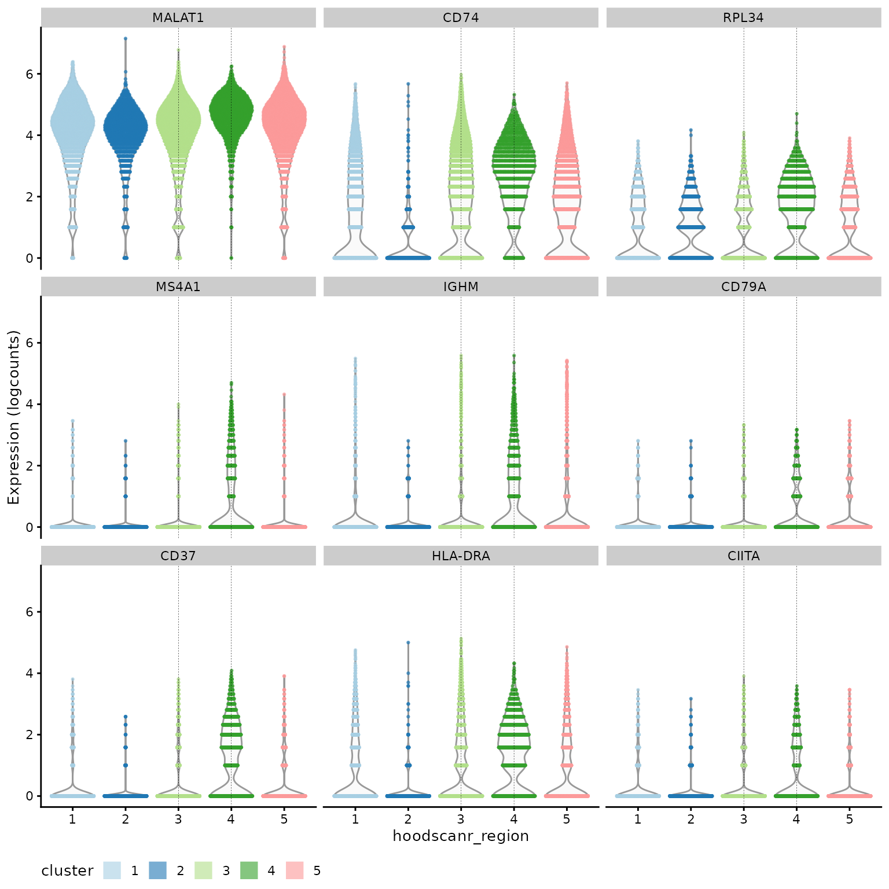
Next we compare the fibroblasts from region 6 (stroma) against those from region 3 (tumour-adjacent). Investigating and visialising the top genes shows that LUM and POSTN are up-regulated in stromal fibroblasts while MMP11 and AQP1 are up-regulated in the tumour-adjacent fibroblasts.
# study markers of T cell regulatory_4
chosen_tcell = marker.info[["T cell regulatory_4"]]
ordered_tcell = chosen_tcell[order(chosen_tcell$rank.AUC), ]
head(ordered_tcell[, 1:4])## DataFrame with 6 rows and 4 columns
## self.average other.average self.detected other.detected
## <numeric> <numeric> <numeric> <numeric>
## CD37 0.921737 0.921644 0.545455 0.478048
## FYN 0.778307 0.329144 0.504132 0.213585
## FYB1 0.712461 0.342734 0.454545 0.253396
## IL6ST 0.721561 0.261453 0.429752 0.185830
## IL32 1.029293 0.813102 0.611570 0.483851
## TIGIT 0.557663 0.167929 0.396694 0.127260
plotExpression(lung5,
features = head(rownames(ordered_tcell), 9),
x = "hoodscanr_region",
colour_by = "hoodscanr_region",
ncol = 3
) +
geom_vline(xintercept = c(3, 4), lwd = 0.1, lty = 2) +
scale_colour_brewer(palette = "Paired", na.value = "#333333", name = "cluster") +
theme(legend.position = "bottom") +
guides(colour = guide_legend(override.aes = list(shape = 15, size = 5)))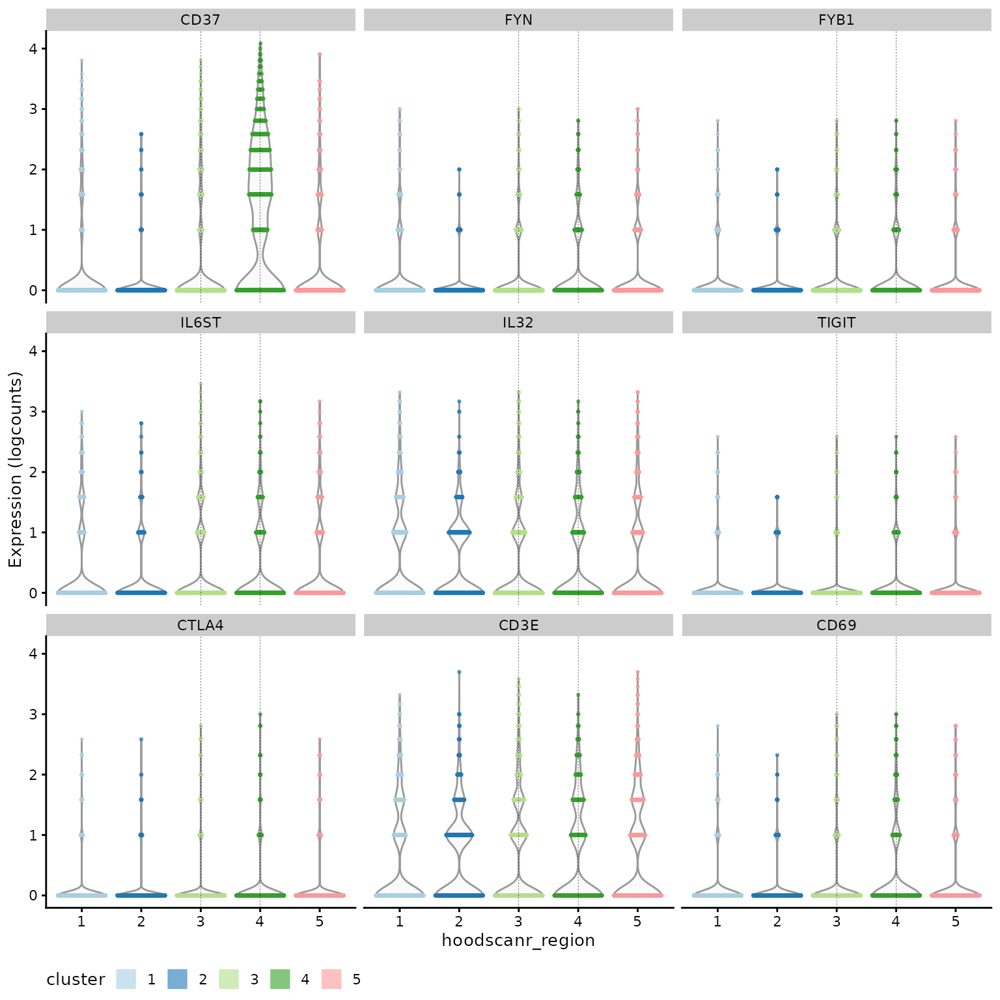
Functional analysis
The example dataset used here was generated using the 10x Xenium platform that measured 380 genes. More recent versions of this platform and competing platforms such as the NanoString CosMx are now providing around 5000 genes (soon whole transcriptome as well!). It is relatively easy to scan through the strongest differentially expressed genes from a list of at most 380 genes to understand the processes underpinning the system. With larger panel sizes, we need computational tools to perform such analyses, often referred to as gene-set enrichment analysis or functional analysis. As this is an extensive topic, it is not covered in depth in this workshop, however, we have previously developed a workshop on gene-set enrichment analysis and refer the attendees to that if they are interested. A non-programmatic interface of some of the tools in our workshop can be accessed through vissE.cloud.
Optional: You can also explore the full dataset from this workshop on vissE.cloud through the following link. This exploratory analysis performs principal components analysis (PCA) or non-negative matrix factorisation (NMF) on the dataset to identify macroscopic biological programs. It then performs gene-set enrichment analysis on the factor loadings to explain the biological processes.
Packages used
This workflow depends on various packages from version 3.21 of the Bioconductor project, running on R version 4.5.1 (2025-06-13) or higher. The complete list of the packages used for this workflow are shown below:
## R version 4.5.1 (2025-06-13)
## Platform: x86_64-pc-linux-gnu
## Running under: Ubuntu 24.04.2 LTS
##
## Matrix products: default
## BLAS: /usr/lib/x86_64-linux-gnu/openblas-pthread/libblas.so.3
## LAPACK: /usr/lib/x86_64-linux-gnu/openblas-pthread/libopenblasp-r0.3.26.so; LAPACK version 3.12.0
##
## locale:
## [1] LC_CTYPE=C.UTF-8 LC_NUMERIC=C LC_TIME=C.UTF-8
## [4] LC_COLLATE=C.UTF-8 LC_MONETARY=C.UTF-8 LC_MESSAGES=C.UTF-8
## [7] LC_PAPER=C.UTF-8 LC_NAME=C LC_ADDRESS=C
## [10] LC_TELEPHONE=C LC_MEASUREMENT=C.UTF-8 LC_IDENTIFICATION=C
##
## time zone: UTC
## tzcode source: system (glibc)
##
## attached base packages:
## [1] stats4 stats graphics grDevices utils datasets methods
## [8] base
##
## other attached packages:
## [1] Banksy_1.4.0 hoodscanR_1.6.0
## [3] CosMxSpatialAnalysisWorkshop_1.0.0 singscore_1.28.0
## [5] SpaNorm_1.3.4 SpatialExperiment_1.18.1
## [7] SingleR_2.10.0 standR_1.12.0
## [9] scater_1.36.0 scran_1.36.0
## [11] scuttle_1.18.0 SingleCellExperiment_1.30.1
## [13] SummarizedExperiment_1.38.1 Biobase_2.68.0
## [15] GenomicRanges_1.60.0 GenomeInfoDb_1.44.0
## [17] IRanges_2.42.0 S4Vectors_0.46.0
## [19] BiocGenerics_0.54.0 generics_0.1.4
## [21] MatrixGenerics_1.20.0 matrixStats_1.5.0
## [23] patchwork_1.3.1 ggplot2_3.5.2
##
## loaded via a namespace (and not attached):
## [1] RColorBrewer_1.1-3 jsonlite_2.0.0
## [3] magrittr_2.0.3 ggbeeswarm_0.7.2
## [5] magick_2.8.7 farver_2.1.2
## [7] rmarkdown_2.29 fs_1.6.6
## [9] ragg_1.4.0 vctrs_0.6.5
## [11] memoise_2.0.1 DelayedMatrixStats_1.30.0
## [13] prettydoc_0.4.1 htmltools_0.5.8.1
## [15] S4Arrays_1.8.1 BiocNeighbors_2.2.0
## [17] SparseArray_1.8.0 sass_0.4.10
## [19] bslib_0.9.0 htmlwidgets_1.6.4
## [21] desc_1.4.3 plyr_1.8.9
## [23] cachem_1.1.0 igraph_2.1.4
## [25] lifecycle_1.0.4 pkgconfig_2.0.3
## [27] rsvd_1.0.5 Matrix_1.7-3
## [29] R6_2.6.1 fastmap_1.2.0
## [31] aricode_1.0.3 GenomeInfoDbData_1.2.14
## [33] digest_0.6.37 AnnotationDbi_1.70.0
## [35] dqrng_0.4.1 irlba_2.3.5.1
## [37] textshaping_1.0.1 RSQLite_2.4.2
## [39] beachmat_2.24.0 sccore_1.0.6
## [41] labeling_0.4.3 httr_1.4.7
## [43] abind_1.4-8 compiler_4.5.1
## [45] bit64_4.6.0-1 withr_3.0.2
## [47] BiocParallel_1.42.1 viridis_0.6.5
## [49] DBI_1.2.3 DelayedArray_0.34.1
## [51] rjson_0.2.23 bluster_1.18.0
## [53] tools_4.5.1 vipor_0.4.7
## [55] beeswarm_0.4.0 glue_1.8.0
## [57] dbscan_1.2.2 grid_4.5.1
## [59] cluster_2.1.8.1 reshape2_1.4.4
## [61] gtable_0.3.6 tidyr_1.3.1
## [63] data.table_1.17.8 BiocSingular_1.24.0
## [65] ScaledMatrix_1.16.0 metapod_1.16.0
## [67] XVector_0.48.0 RcppAnnoy_0.0.22
## [69] RANN_2.6.2 ggrepel_0.9.6
## [71] pillar_1.11.0 stringr_1.5.1
## [73] limma_3.64.1 RcppHungarian_0.3
## [75] splines_4.5.1 dplyr_1.1.4
## [77] lattice_0.22-7 bit_4.6.0
## [79] annotate_1.86.1 tidyselect_1.2.1
## [81] locfit_1.5-9.12 Biostrings_2.76.0
## [83] knitr_1.50 gridExtra_2.3
## [85] edgeR_4.6.3 scattermore_1.2
## [87] xfun_0.52 statmod_1.5.0
## [89] stringi_1.8.7 UCSC.utils_1.4.0
## [91] yaml_2.3.10 evaluate_1.0.4
## [93] codetools_0.2-20 tibble_3.3.0
## [95] BiocManager_1.30.26 graph_1.86.0
## [97] cli_3.6.5 uwot_0.2.3
## [99] leidenAlg_1.1.5 xtable_1.8-4
## [101] systemfonts_1.2.3 jquerylib_0.1.4
## [103] Rcpp_1.1.0 png_0.1-8
## [105] XML_3.99-0.18 parallel_4.5.1
## [107] pkgdown_2.1.3 blob_1.2.4
## [109] mclust_6.1.1 ggalluvial_0.12.5
## [111] sparseMatrixStats_1.20.0 viridisLite_0.4.2
## [113] GSEABase_1.70.0 scales_1.4.0
## [115] purrr_1.1.0 crayon_1.5.3
## [117] rlang_1.1.6 cowplot_1.2.0
## [119] KEGGREST_1.48.1